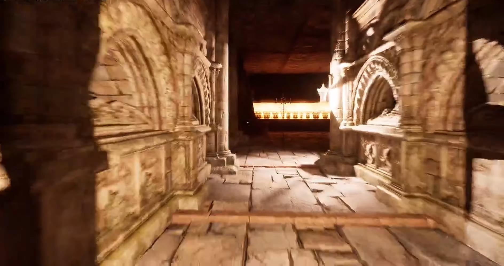
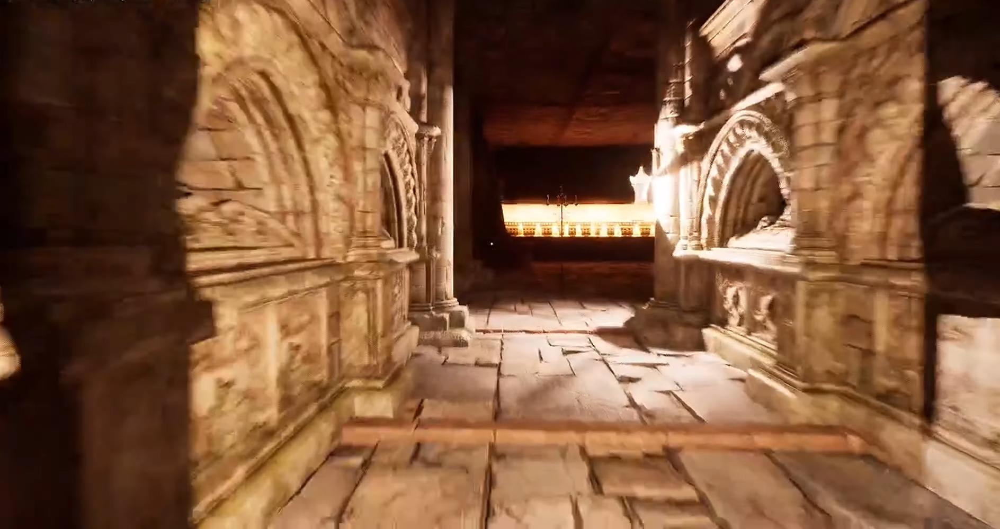
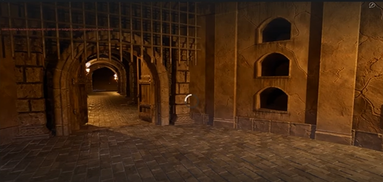
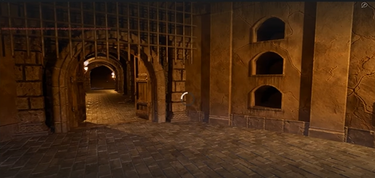
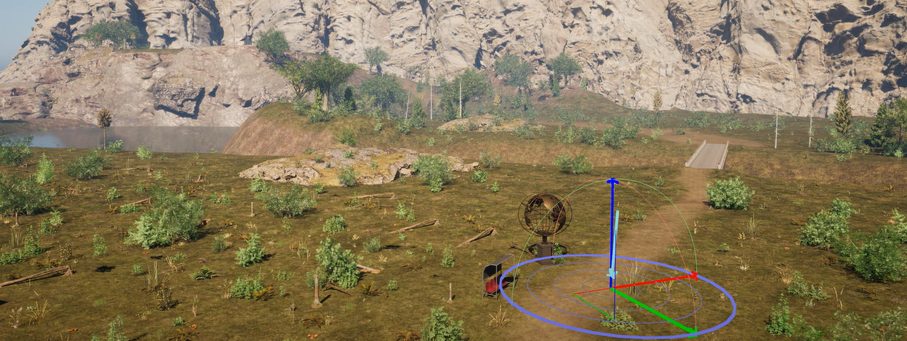
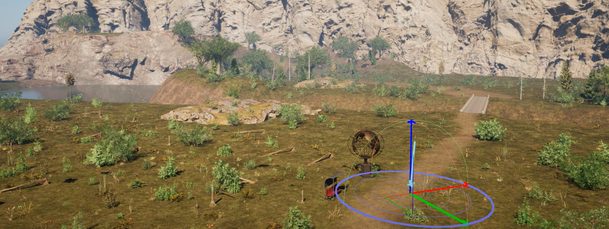

Hello there, I'm NOT General Kenoby
My name is Martin KunDis Svanda
Would you like to know more?
Projects
Project Title 0
Describe the project being very specific, you can use the Twitter standard: no more than 280 characters: complement the information: the skills learned or reinforced in its realization and how you faced it, prove to be proactive in the search for solutions.

 



 



 



Contact
Martin KunDis Švanda
Software Developer
/
Game Developer
Schillerstraße 12
Waldsassen
95652
Deutschland/Germany
martin.k.svanda@gmail.com
+49 (0)175 9096965